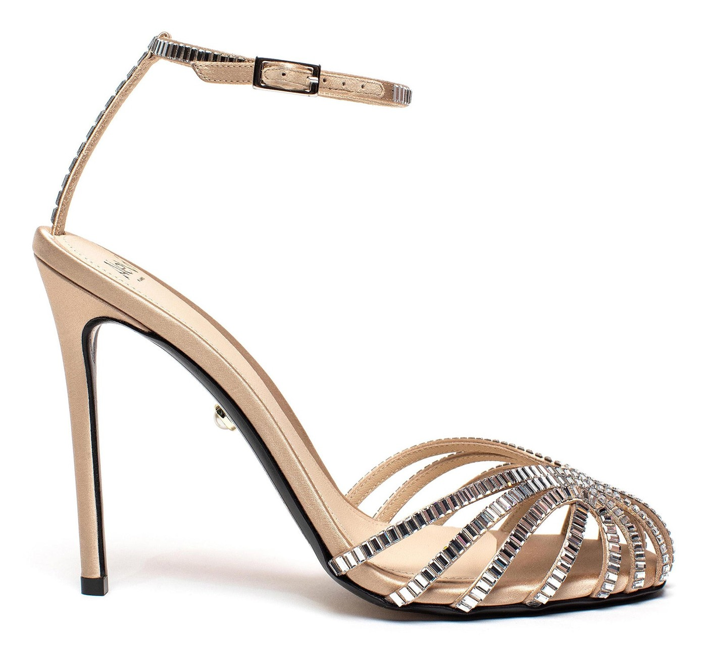

Una prova per Alevì Milano
Penelope
Xtal 110
La mattina dopo. Milano all'alba, la festa è finita da poco: lei è ancora seduta sul tetto dell'auto, ride, con le Penelope ai piedi.

La mattina dopo. Milano all'alba, la festa è finita da poco: lei è ancora seduta sul tetto dell'auto, ride, con le Penelope ai piedi.
Penelope è difficile da rifare: la punta chiusa a gabbia, la raggiera di listini con una fila di cristalli baguette ciascuno, il piede che si vede tra i listini. Sono partito dalle vostre foto di Penelope Xtal 110 in satin skin e da foto della scarpa indossata, e ho controllato ogni immagine dettaglio per dettaglio: la punta chiusa con le dita dentro la gabbia, le baguette, il cinturino con il listino di cristalli e la fibbia rettangolare, il tacco da 110 in raso con il lato nero, la piccola perla nella montatura d'oro.


Momenti rubati, non pose: la risata sul tetto dell'auto, la discesa dalla portiera sulla strada vuota, la fuga sul selciato con la giacca che scivola, i gradini di un palazzo milanese al primo sole. Stessa donna, stessa seta, stessa giacca da sera sulle spalle. La scarpa sempre protagonista.


Uno spot verticale di undici secondi, pensato per reel e storie: la risata sul tetto dell’auto, la portiera aperta, lo sguardo sui gradini al primo sole. La scarpa resta la vostra in ogni fotogramma.
Qui trovate la mia presentazione, con i mondi che ho costruito per altri marchi.
matteopalumboph-ctrl.github.io/mplureLa stessa cura sugli altri colori e sulle altre altezze di Penelope, e sui modelli che scegliete voi, con immagini e un breve film. Senza organizzare uno shooting.
Le immagini sono costruite con strumenti di intelligenza artificiale a partire dalle vostre foto, sotto la mia direzione creativa e con il mio ritocco finale, e consegnate in 4K. È una prova base, nata da tre foto a risoluzione web: con i vostri originali in alta risoluzione il dettaglio dei cristalli sale ancora. Prova non commerciale, preparata solo per Alevì Milano.